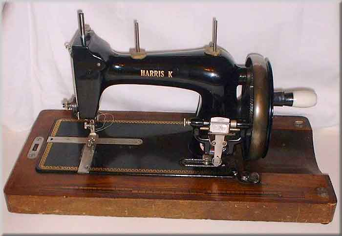
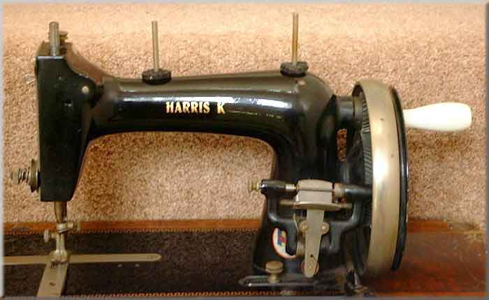

Harris K
Maker: Haid & Neu
Model: Saxonia-type
Example 2
Example 1
Serial #: 3045960
Date: ?

Example 2
Serial #:

©
Alan Quinn 2001. All Rights Reserved
This page may not be reproduced or distributed in part or in whole without the prior written permission of the copyright owner